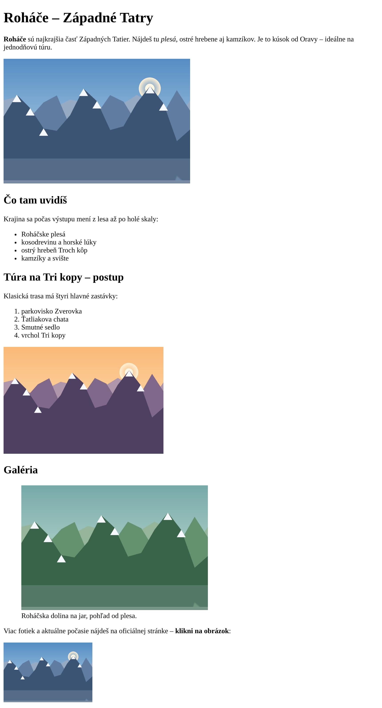

PRX · II.C · Značkovací jazyk HTML — obrázky, nadpisy, zoznamy

Predtým, než začneš písať, si „prečítaj" predlohu. Každá časť = jeden tag, ktorý už poznáš:
| Časť v predlohe | Tag |
|---|---|
| Veľký názov hore (Roháče – Západné Tatry) | <h1> |
| Úvodný odsek; tučné slovo + šikmé slovo v ňom | <p> + <strong> + <em> |
| Veľká hlavná fotka pod úvodom | <img> (so src a alt, width="420") |
| Menšie nadpisy sekcií (Čo tam uvidíš, Galéria…) | <h2> |
| Zoznam s odrážkami | <ul> + <li> |
| Číslovaný zoznam (postup túry) | <ol> + <li> |
| Fotka s popiskom pod ňou | <figure> + <figcaption> |
| Malá fotka úplne dole, ktorá je odkaz | <a> okolo <img> |
<img> tagov je v predlohe? A koľko rôznych obrázkov?V priečinku 04_tema vytvor súbor rohace.html
(alebo pomenuj podľa svojej témy, napr. mesto.html). Kostra: ! + Tab,
oprav lang="sk" a <title>.
Vedľa vytvor priečinok obrazky a daj doň 3 obrázky (vlastné fotky alebo z internetu).
obrazky/:
rohace-plesa.jpg, rohace-hreben.jpg, rohace-dolina.jpg.moje-mesto.jpg.Píš do <body>. Po každom kroku ulož (Ctrl+S) a obnov prehliadač — porovnaj s predlohou.
<h1> s názvom stránky.<p>. Jedno slovo daj tučné (<strong>) a jedno šikmé (<em>).src (cesta) a alt (náhradný text).width="420".src a alt sám/sama
<h2> (napr. „Čo tam uvidíš" a „Galéria").<p>.<ul> — čo tam patrí / čo uvidíš.<ol> — poradie krokov / postup.ul>li*4 + Tab, resp. ol>li*4 + Tab.<figure> a <figcaption>.<img> aj <figcaption> idú vnútri <figure>. Popisok je pod obrázkom.
width="200"), ktorá je odkaz — po kliknutí sa otvorí iná stránka.<a> a <img>.img v a, alebo a v img?src. Obnov — čo sa zobrazí namiesto obrázka? Načo je alt?Plesa.JPG). Funguje to u teba? A fungovalo by to na internete?width na 250, potom na 600. Čo sa deje?height="120" k šírke width="420" — ako teraz vyzerá fotka? Prečo?Nižšie sú 4 riadky. Súbor sa volá plesa.jpg a leží v priečinku obrazky. Nájdi, čo je v každom riadku zle:
<img src="obrazky/plesa.jpg"> <img src="obrazky/Plesa.JPG" alt="Plesá"> <img src="obrazky\plesa.jpg" alt="Plesá"> <img src="plesa.jpg" alt="Plesá"></img>
alt\; v cestách vždy /obrazky/ v ceste a navyše zatvárací </img> (prázdny element ho nemá)<img> s rovnakou šírkou (napr. width="200"). Zobrazia sa vedľa seba alebo pod sebou?<p>. Zmenilo sa niečo?jpg, png, svg? Kedy použiješ ktorý? (hľadaj „jpg vs png vs svg")title na obrázku — pridaj ho a nájdi, kedy sa prejaví.Než odovzdáš, prejdi predlohu a svoju stránku bod po bode:
| ✔ | Mám to na stránke? |
|---|---|
| ☐ | jeden <h1> a aspoň dva <h2> |
| ☐ | úvodný odsek s <strong> aj <em> |
| ☐ | aspoň 3 obrázky, každý má src aj alt |
| ☐ | hlavná fotka má nastavenú width |
| ☐ | odrážkový <ul> aj číslovaný <ol> zoznam |
| ☐ | fotka s popiskom cez <figure> + <figcaption> |
| ☐ | obrázok, ktorý je odkaz (<a> okolo <img>) |
| ☐ | žiadne </img>, cesty s /, bez diakritiky |
SS_PRX_IIC — aj s priečinkom obrazky.index.html pridaj odkaz na svoju novú stránku (napr. 04_tema/rohace.html).obrazky? Sedia veľké/malé písmená v názve súboru?